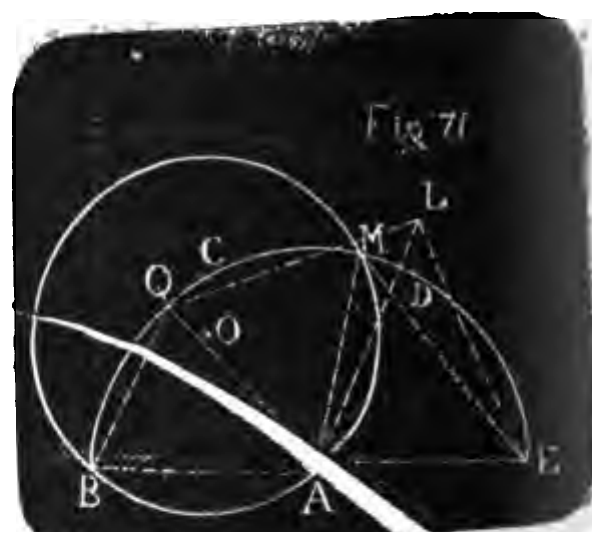

§§ 143–145: Center of a Given Circle (Napoleon’s Problem)¶
BOOK TENTH — OF CENTERS
143. To find (fig. 71) the center of a given circle \(MAB\).
Solution. Taking as center some point \(A\) on its circumference, with an arbitrary radius \(AB\) less than the diameter of the given circle and greater than its fourth part, describe the semicircle \(BCDE\) making \(AB = BC = CD = DE\). Let \(M\) be the point where it cuts the circumference of the given circle. With radius \(EM\) and centers \(E\) and \(A\), mark two arcs intersecting at \(L\). With the same radius \(LA\) and center \(L\), cut the circle \(BME\) at \(Q\). With radius \(BQ\) and centers \(B\) and \(A\), mark two arcs intersecting at \(O\). \(O\) will be the center sought.
Demonstration. Since \(BAE\) is a straight line (15, Book IV), the exterior angle \(LAB\) equals the two opposite interior angles \(ALE\), \(AEL\) taken together in triangle \(ALE\) (32, Book I). Now triangles \(LAE\), \(LAQ\) have all their sides equal to one another; therefore they have equal the angles opposite to equal sides (8, Book I). Hence angle \(AEL = QAL\) and \(ALE = ALQ\). Thus angle \(LAB\) equals the two taken together, \(QAL\) and \(QLA\). Removing angle \(QAL\) from both sides, there remains angle \(QAB = QLA\). Thus in triangle \(LAQ\), the sum of the other two angles \(LAQ\), \(LQA\) equals the sum of the two angles \(AQB\), \(ABQ\) in triangle \(ABQ\) (32, Book I). But these two triangles \(LAQ\), \(ABQ\) are isosceles by construction; hence the angles at their base will be equal to half the sum (5, Book I), and therefore equal to each other in both triangles. Therefore triangles \(LAQ\), \(ABQ\) will be similar (4, Book VI), and \(LA\) will be to \(AQ\) as \(AQ\) to \(QB\). Substituting equal values, \(ME\) will be to \(EA\) as \(AB\) to \(OB\).
f. 0108 · p. 83Therefore the isosceles triangles \(MAE\), \(AOB\), having proportional sides, are equiangular to each other (5, Book VI), and angle \(OAB = AME = AEM\). But the exterior angle \(MAB\) equals the two interior angles, equal to each other, taken together, \(AME\), \(AEM\) in triangle \(AEM\) (32, Book I). Hence it equals twice angle \(OAB\); that is, \(OAB = OAM\). Moreover, in the two triangles \(OAB\), \(OAM\), sides \(AB\), \(AM\) are equal to each other, and side \(OA\) is common; that is, the two triangles have an equal angle contained between equal sides; hence (4, Book I) the third side \(OB\) of one triangle will also equal the third side \(OM\) of the other. Thus the three \(OB\), \(OA\), \(OM\) are equal, and therefore \(O\) is the sought center of circle \(MAB\) (9, Book III).
144. Once the value of \(QB\), the third proportional to \(LA\), \(AQ\), or to \(EM\), \(EA\), has been found—which is the value of the radius of the circle whose center is sought—it suffices to take two arbitrary points on the circumference of the circle, and with them as centers, to mark two arcs with this radius that intersect. Their intersection will be the center of the circle.
145. It will be useful in practice, in order to obtain intersections at less acute angles, to choose by eye a radius \(AB\) that approaches the value of the radius of the circle sought.

